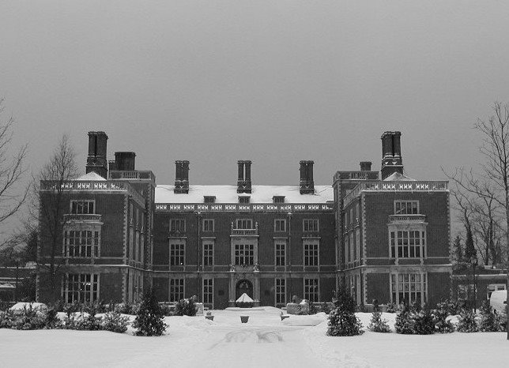
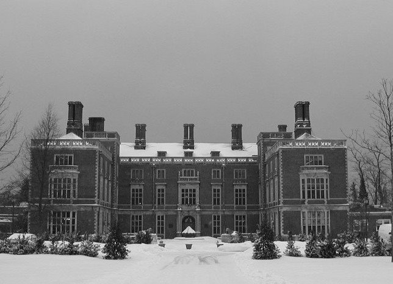

É impossível falar do Batman e associá-lo à MANSÃO. Após o brutal assassinato de seus pais, a tragédia que levou o jovem Bruce Wayne a uma jornada para se tornar o defensor de Gotham City, a mansão passou a ser ocupada somente por ele e por Alfred, seu mordomo.
A mansão tem como principal função ser um disfarce para a Batcaverna, localizada em seu subterrâneo. É ainda importante para mostrar um lado playboy e excêntrico de Bruce, contribuindo para manter a verdadeira identidade do Homem-Morcego em sigilo. Também é um monumento à memória de seus pais, com quadros e objetos preservados desde a época em que moravam nela.
A imponência da mansão Wayne foi representada nas telinhas por grandes propriedades.
 
